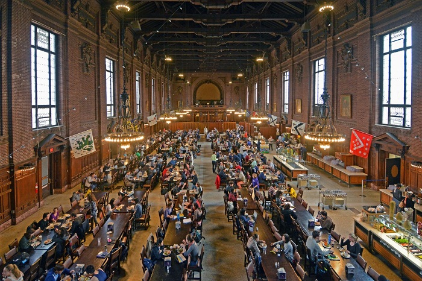
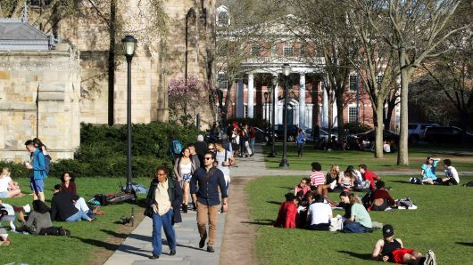
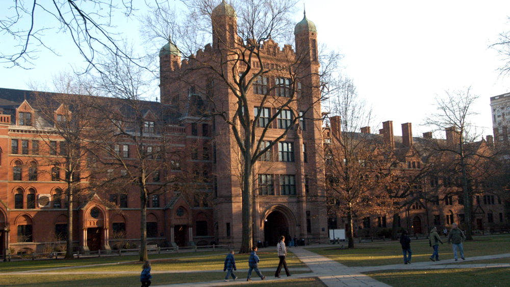

Educacion Superior
Universidad YALE
La Universidad Yale (en inglés Yale University) es una universidad privada ubicada en New Haven, Connecticut (Estados Unidos). Fundada en 1701 y miembro de la selecta Ivy League, Yale es la tercera institución de educación superior más antigua de Estados Unidos y uno de los nueve Colleges coloniales reconocidos con una Carta Real del monarca británico antes de la Revolución de las Trece Colonias

El clero fundó una Escuela Colegiada autorizada por la Provincia de Connecticut para educar sacerdotes de la Iglesia congregacional. Esta escuela se trasladó a New Haven en 1716 y fue renombrada Yale College en reconocimiento a una donación realizada por Elihu Yale, gobernador de la Compañía Británica de las Indias Orientales. Restringido en origen a la teología y las lenguas sacras, el currículo de la institución comenzó a incorporar humanidades y ciencias en la época de la Revolución colonial. En el siglo XIX, la escuela introdujo formación para graduados y profesionales, y en 1861 concedió el primer Philosophiæ doctor (Ph.D.) en Estados Unidos y se organizó como universidad en 1887.6 Su número de profesores y estudiantes creció después de 1890 con la rápida expansión de su campus y de la investigación científica.

Yale está organizada actualmente en catorce escuelas constituyentes: el college de pregrado original, la Escuela de Artes y ciencias de Yale y doce escuelas profesionales. Mientras que la universidad está gobernada por la Yale Corporation, cada facultad de sus escuelas supervisa sus propios currículos y programas de grado. Además del campus principal ubicado en el centro de New Haven, la universidad posee instalaciones de atletismo al oeste de la ciudad, un campus en West Haven (Connecticut) y reservas naturales en diversos lugares de Nueva Inglaterra. La dotación económica de la Universidad Yale en junio de 2017 fue de 23 404 millones de €, la segunda más elevada de una institución educativa en Estados Unidos.2 La Biblioteca de la Universidad Yale, que sirve a todas sus escuelas, alberga más de 15 millones de volúmenes y es la tercera biblioteca académica más grande del país.
